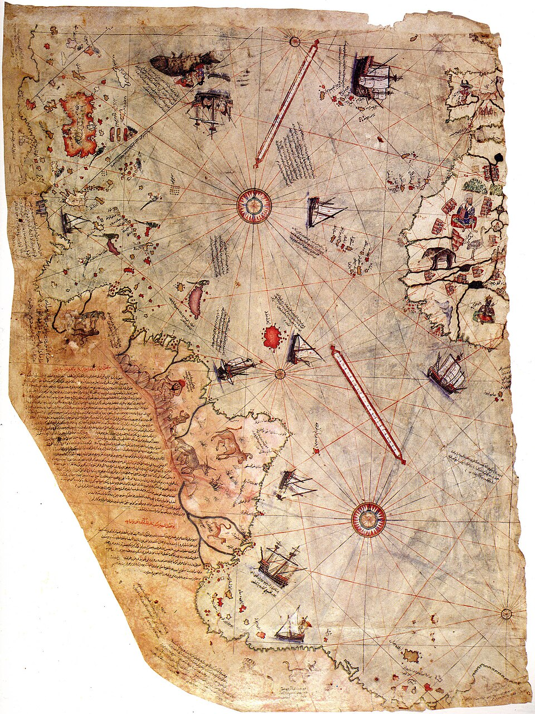

DOSSIER M35 // OTTOMAN CARTOGRAPHY // 1513
Piri Reis map and claims of ice-free Antarctica
[ MARITIME & GEOGRAPHIC MYSTERIES // MAP ]


Event and chronology
Ottoman admiral Piri Reis compiled a world map in 1513 using multiple earlier charts, of which a fragment survives. A modern claim interprets its southern coastline as Antarctica before its official discovery and says the map records a now-lost, highly accurate civilization.
What later accounts allege
The allegation is that the map depicts Antarctica free of ice and preserves ancient survey data, implying forbidden prehistoric maritime technology or a suppressed global cartographic tradition. The claim depends on rotating and stretching the map fragment to fit a modern outline.
Records, searches and conditions
The surviving fragment, its marginal notes and scholarly studies of Ottoman cartography establish its actual provenance and mapmaking context. Historians identify the southern land as an extension of South America or a conventional Terra Australis, not a measured Antarctic coast.
Independent and contrary evidence
The coastline does not align consistently with Antarctica when projection, scale and distortion are accounted for. There is no independent ancient Antarctic chart, dated survey record or archaeological evidence linking the fragment to an ice-free civilization.
What remains unknown
The exact sources Piri Reis used for each region are not all known, and the map is fragmentary. That ordinary gap should not be converted into proof of a technological culture for which no independent evidence exists.
Assessment
The map is historically significant but does not demonstrate pre-modern mapping of Antarctica. Newly identified source charts with secure dates and matching coastlines could change the cartographic discussion; the current fragment does not support the extraordinary claim.
Sources and limits
- Gregory C. McIntosh — The Piri Reis Map of 1513Named scholarly study analyzes fragment, sources and Antarctic interpretation; it is commentary, not the map artifact.
- John B. Harley — “The Piri Reis Map of 1513,” Imago MundiAcademic map-history article gives early-modern context; access may require subscription.
- Topkapı Palace — Piri Reis map collection recordMuseum collection is the repository for the fragment; general collection access is not a technical evaluation of Antarctica claim.